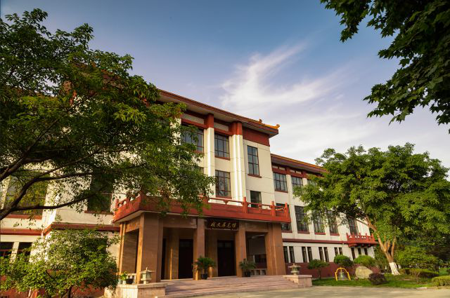
校史档案
银杏渐次呈黄的过程总是容易被人忽略，唯有木叶满地才能庄严地宣告深秋时令的悄至，锦城的秋天，是从我们的脚下展开的。水道边苍虬入云的银杏正在鲜明地燃烧，同时剧烈地扯动着校园的神经，微凉的细风携带着一股冷峻的气流，在大地上流淌，仿佛一滴浓墨入水，徐缓地绽放开来，在袅袅的墨烟中，席卷着推进，让整个水面都被染上了秋天的况味。这种况味是在别处难以捕捉的，这里，秋天来得很平静，大约是被青瓦石上的巴山夜雨融化了，或是被成都女孩轻盈的微笑淡解了，常绿一如其常态，平和地收藏了夏天的浪漫。
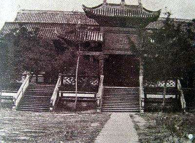
成立之初——锦江书院
康熙四十三年（1704年），四川按察使刘德芳在文翁石室原址建锦江书院，在雍正十一年（1733年）被御定为全国
22家最著名的省级书院之一，有“石室云霞思古梦,锦江风雨读书灯”的美誉，为四川大学源头之一。
更多信息
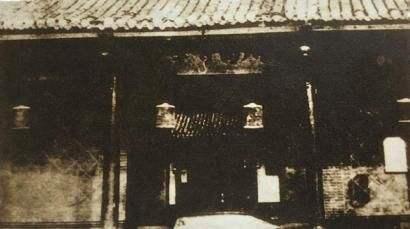
成立之初——尊经书院
创办于光绪元年（1875）的尊经书院以“通经致用”为主张，拟增设“声、光、电、化、格致之学”，
领传统教育转型之先，与锦江书院同为四川大学历史源头。
更多信息
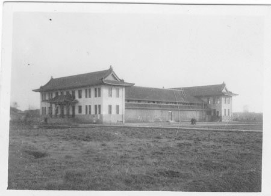
近代的发展
光绪三十二年（1905年）四川总督锡良责成提学使方旭和劝业道周善培在仕学馆基础上成立四川通省法政学堂。同年，四川通省农政
学堂，四川工业学堂成立。“以储通才而维国学”。
更多信息
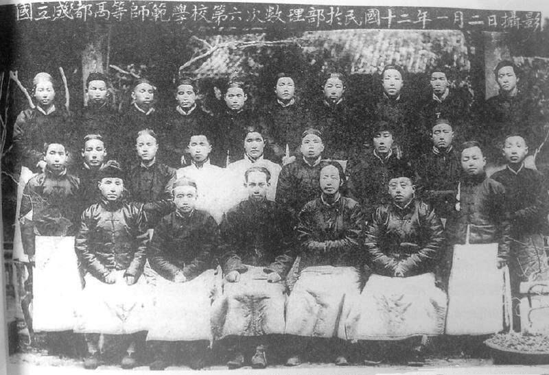
国立成都高等师范学校（1916—1927）
辛亥革命后，四川省城高等学堂改名为四川官立高等学校，
四川通省师范学堂改名为四川优级师范学校和四川高等师范
学校。1916年，四川官立高等学校改名为国立
成都高等师范学校。值得一提的是，吴玉章先生曾担任国立成都高等师范校长。
更多信息
爱国园地
国立成都高等师范学校是四川“五四”运动和新文化运动的策源地。学校师生在四川率先发动“外争国权，内惩国贼”的反帝、反封建爱国运动，大办与《湘江评论》齐名的《星期日》等传播新思潮的进步刊物，涌现了一批学生领袖和革命先驱。
更多信息
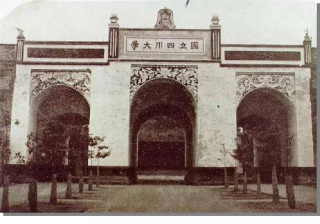
国立四川大学（1931-1949）
1931年，国立成都大学、国立成都师大、公立四川大学，三所学校合并为国立四川大学，众水归流,成为当时全国最早的13所国立大学之一，并在办学规模上位居全国前列。
抗战期间，由于地处西南地区中心城市，而且地处抗战大后方，国立四川大学群贤毕至，各类学科大师云集，学术繁荣，被誉为当时的“国立十大学府”之一。
更多信息
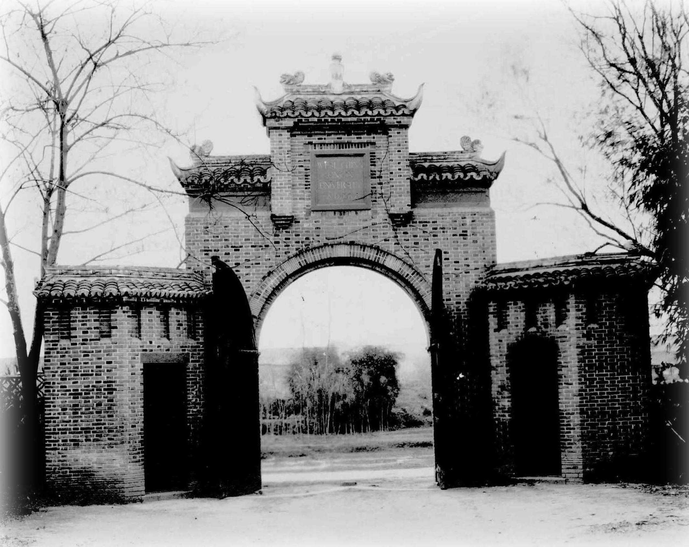
华西协合大学（1910—1951）
清光绪三十一年（1905年），在川的各基督教会决定联合创办一所高等学府，地址定在成都。5年后大学正式成立，定名华西协合大学。
它是中国西部唯一的一所由美国、英国、加拿大三国基督教会五个差会联合创办的基督教会大学。
大学的组织管理模仿牛津、剑桥的体制，实行“学舍”制，由各差会分别建筑学舍，并负责其管理。
1933年更名为“私立华西协和大学”，1951年更名为“华西大学”。
更多信息
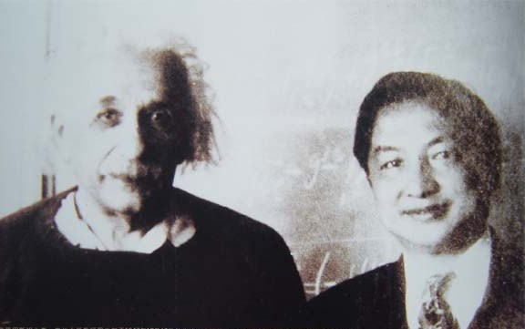
国际化的华西
华西协合大学文学院院长罗忠恕与爱因斯坦会晤。1947年12月中旬，罗忠恕即从墨西哥乘飞机
到美国参加田纳西水坝工程。同年12月16日，美国新泽西州普林斯顿高级研究岁主任邀请罗忠恕于当日上午到研究所
与世界科学巨人爱因斯坦会晤。
更多信息
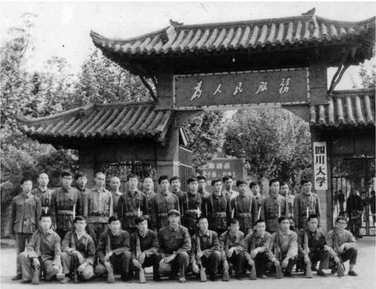
四川大学（1950-1994）
新中国成立之初，四川大学拥有六大学院：文、理、法、工、农、师范。在50年代的院系调整中，四川大学从综合型大学转变为文理科综合大学，归教育部直属。
更多信息

彼时的川大
1978年四川大学恢复招生，学校秉承“面向现代化，面向世界，面向未来”的方针，川大抓住机遇，利用自身长期形成的优势，
改革传统基础学科，新建许多国家急需的应用学科、技术学科和新兴学科，发展为包括人文科学、社会科学、管理科学、自然科学、技术科学的多学科性综合大学。
更多信息
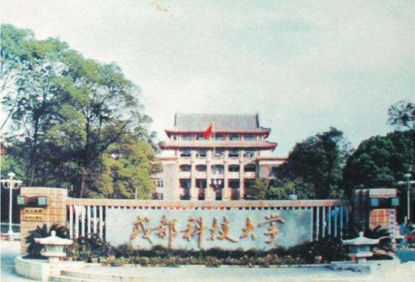
成都科技大学（1954—1993）
1978年9月，经国务院批准，成都工学院改为成都科技大学，列为全国重点大学，由中国科学院和四川省双重领导，以中国科学院为主
1953年7月，高教部召开会议将四川大学工学院和四川化工学院于1954年合并建立成都工学院，学校的最大发展规模为10000人。
更多信息
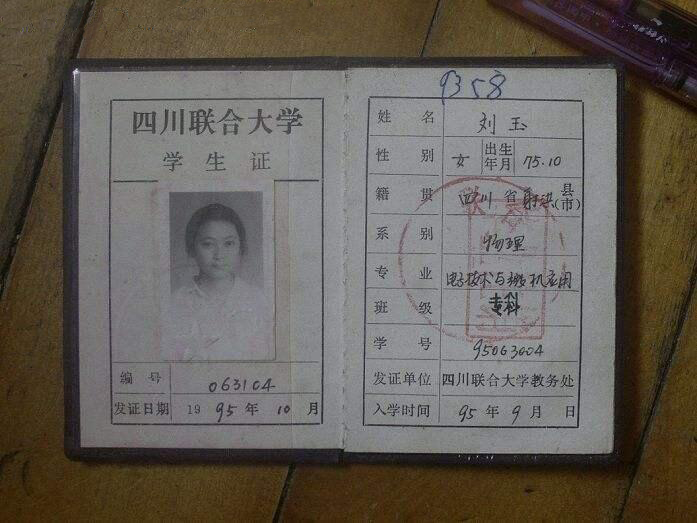
四川联合大学（1994—1998）
1994年4月，原同属国家教委的两所国家重点大学四川大学和成都科技大学，完成强强合并，成立“四川联合大学”，
成为当时国内高校中专业覆盖最广、规模最大的文理渗透、理工结合的新型综合大学之一。
更多信息
四川大学（1998至今）
1998年12月，经国家教委批准，“四川联合大学”更名为“四川大学”。
2000年9月，原属卫生部管理的国家重点大学——华西医科大学，并入四川大学。
985工程”和“211工程”重点建设的高水平研究型综合大学，学科覆盖了文、理、工、医、经、管、法、史、哲、农、教、艺等12个门类，有30个学科型学院及研究生院、海外教育学院等学院。
更多信息
留言板
致川大
我如果爱你
——绝不像攀援的凌霄花
借你的高枝炫耀自己
我如果爱你
——绝不学痴情的鸟儿
为绿荫重复单调的歌曲
也不止像泉源
常年送来清凉的慰藉
也不止像险峰
增加你的高度
衬托你的威仪
致川大
明远湖面上
映照着初见你时的模样
环形大道旁
是与你邂逅的地方
不高山脚，白石桥边
慢慢走近你
也慢慢读懂你
读懂你两百多年的厚重历史
读懂你为祖国书写的一段段传奇
还有你的开放与包容
不老与美丽
联系我们
电话：086+17306738379
WebPageDesign
邮箱：maishang9@gmail.com
川大风景 ｜ 川大历史 ｜ 川大名人 ｜ 联系我们
All Rights reserved.@2019-2020
本网站设计已受版权保护，任何公司及个人不得复制，违者将依法追究责任，特此申明